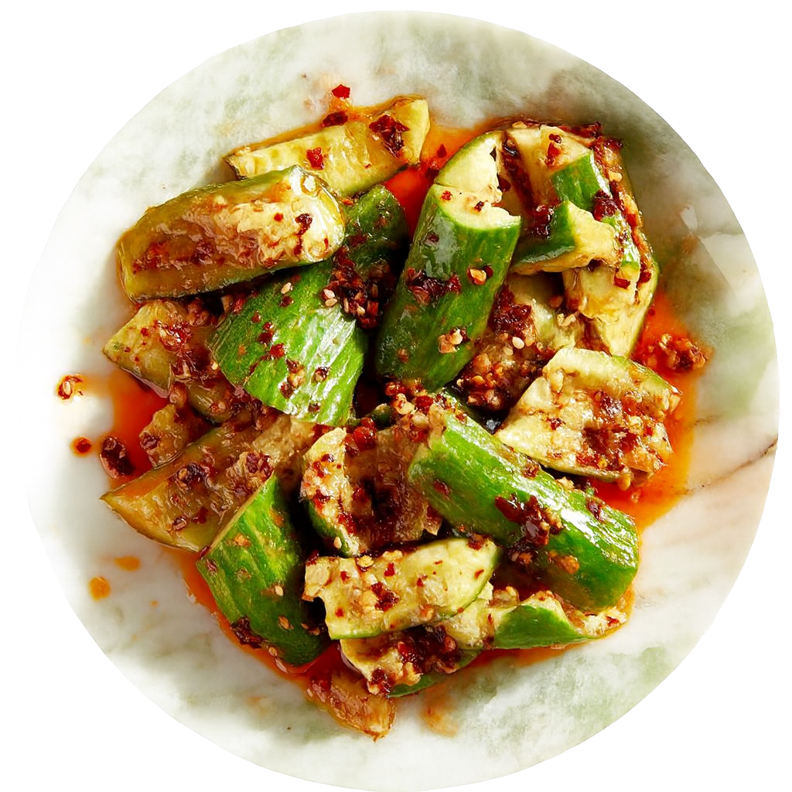
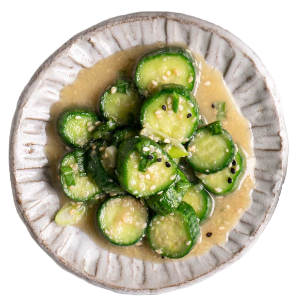
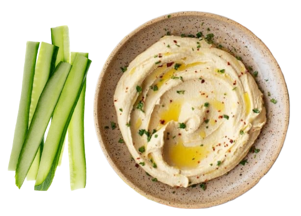

←
cucumber chili oil salad

- cucumbers
- chili oil
- minced garlic
- sesame oil
- sesame seeds
sesame cucumber salad

- cucumbers
- sesame dressing
- vinegar
- garlic
- sweetener
- sesame seeds
cucumber & hummus

- cucumbers
- tahini
- lemon juice
- garlic
- olive oil
- ground cumin
- ground paprika
- salt